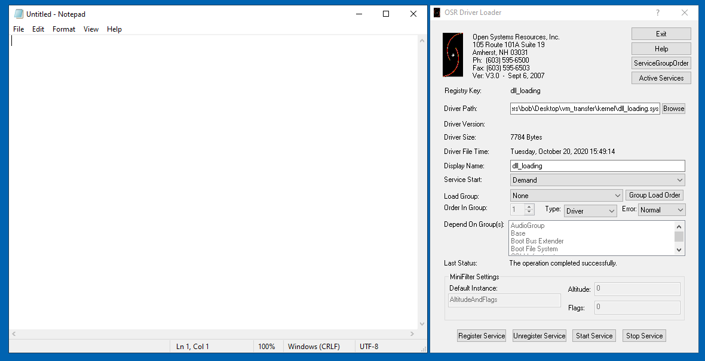
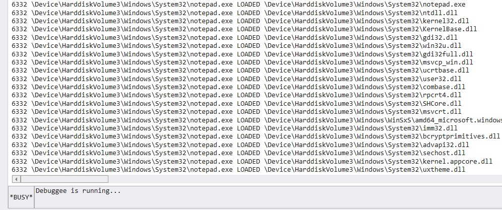

# Loaded DLLs
-
https://docs.microsoft.com/en-us/windows-hardware/drivers/ddi/ntddk/nf-ntddk-pssetloadimagenotifyroutine-
https://docs.microsoft.com/en-us/windows-hardware/drivers/ddi/ntddk/nc-ntddk-pload_image_notify_routinePsSetLoadImageNotifyRoutine notifies the driver when a DLL is laoded (or mapped into memory).
A debuggee machine is running our driver.
A debugger machine is running WinDbg and is connected to the debuggee machine.
On the debuggee machine running our driver I run
notepad.
Back on the debugger machine, we see the output from our kernel driver in WinDbg.
notepad.exe, with PID
6332, has loaded a bunch of DLLs.
#include <ntifs.h>
#include <ntddk.h>
#include <wdf.h>
/*
Routine that runs on DLL being loaded.
*/
void notify_LoadedDLL(PUNICODE_STRING full_image_name, HANDLE process_id, PIMAGE_INFO image_info)
{
UNREFERENCED_PARAMETER(image_info);
PEPROCESS process_info = NULL;
PUNICODE_STRING process_name = NULL;
// grab name of process that loaded the DLL
PsLookupProcessByProcessId(process_id, &process_info);
SeLocateProcessImageName(process_info, &process_name);
DbgPrint("%d %wZ LOADED %wZ \n", process_id, process_name, full_image_name);
return;
}
void DriverUnload(PDRIVER_OBJECT DriverObject)
{
UNREFERENCED_PARAMETER(DriverObject);
PsRemoveLoadImageNotifyRoutine(notify_LoadedDLL);
DbgPrint("driver unloaded \n");
return;
}
NTSTATUS DriverEntry(PDRIVER_OBJECT DriverObject, PUNICODE_STRING RegistryPath)
{
UNREFERENCED_PARAMETER(DriverObject);
UNREFERENCED_PARAMETER(RegistryPath);
NTSTATUS nt_status = STATUS_SUCCESS;
DriverObject->DriverUnload = DriverUnload;
// start
DbgPrint("driver loaded \n");
// notifications
nt_status = PsSetLoadImageNotifyRoutine(notify_LoadedDLL);
return nt_status;
}